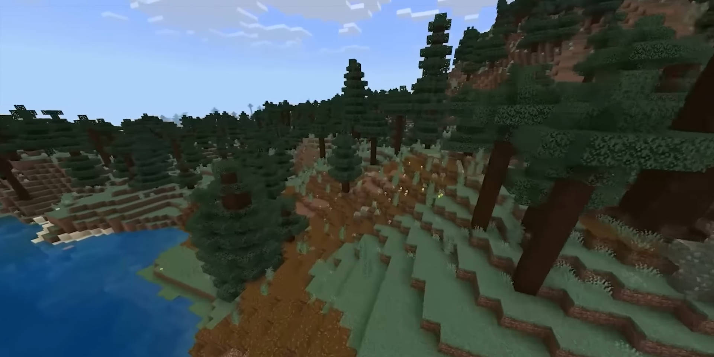
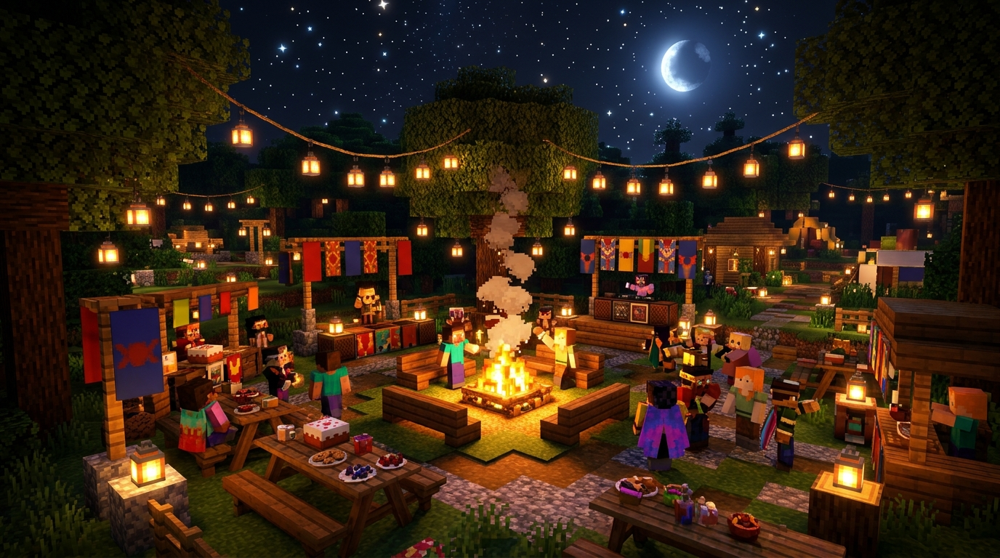
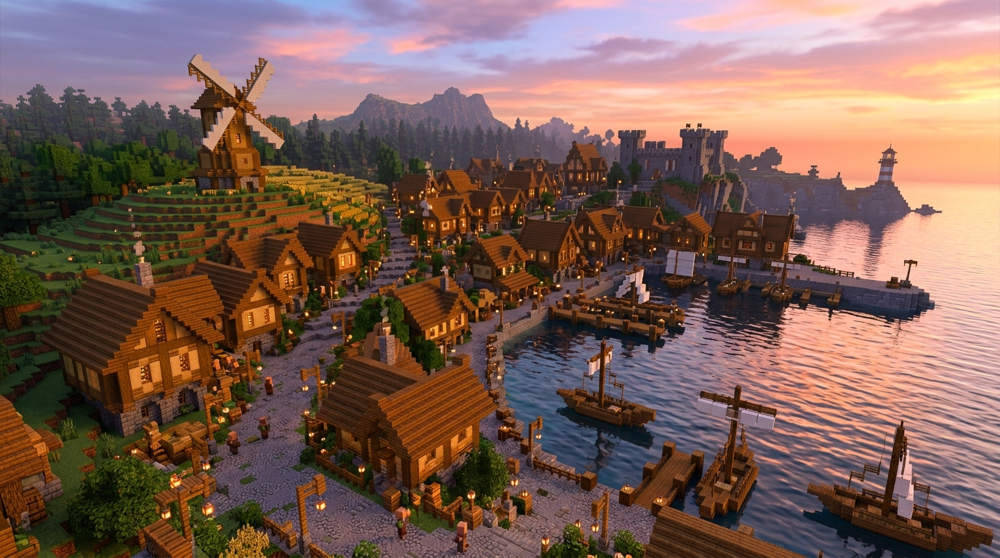

Olimpiade Sains Nasional
Second Place in Informatics at the Regency Level
Placed second in Informatics in Tanggamus Regency and advanced to the provincial round in Lampung.
I am currently updating the content and interface. In the meantime, feel free to reach me by email.
Send an emailExperience from 2022 - 2024
Activities and achievements from high school that taught me how to lead, work with a team, and follow through on responsibilities.
Minecraft scenes illustrate these experiences. They are not photographs of the events.
Second Place in Informatics at the Regency Level
Placed second in Informatics in Tanggamus Regency and advanced to the provincial round in Lampung.

Customary Leader · Scout Movement
Led customary ceremonies, maintained activity procedures, and supported members in developing discipline and character.

Event Supervisor
Monitored the event and committee work, then provided evaluations throughout the program.

Field Coordinator
Coordinated committee members and participants in a province-level scouting competition in Lampung.